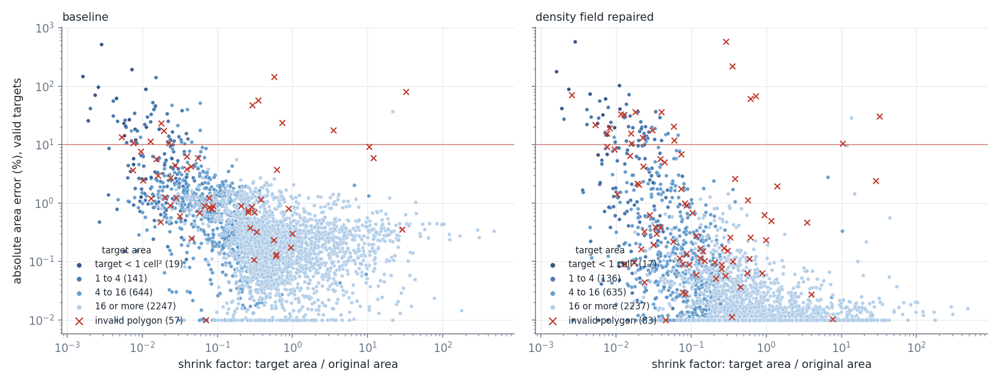
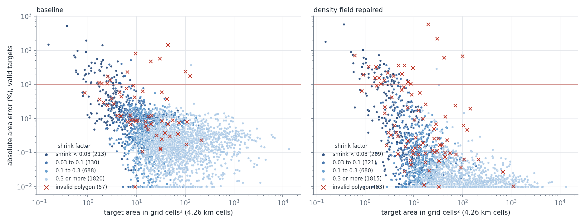
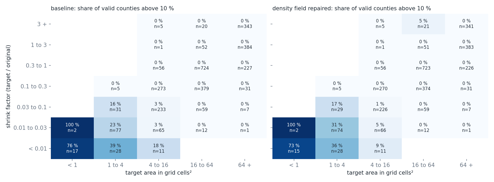
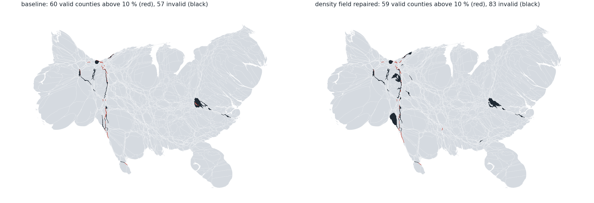
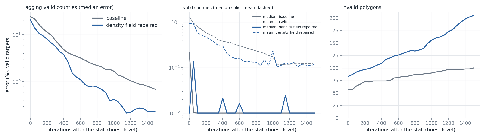

Rasterizing a repaired polygon (shapely.make_valid) instead of the invalid ring when the density field is built lowers the median error of the valid counties from 0.25 % to 0.012 % and their p95 from 2.4 % to 1.3 %, and the median error of the valid neighbors of invalid regions from 0.86 % to 0.12 %. The number of invalid polygons rises from 57 to 83 and the number of counties above 10 % is unchanged. Excluding the invalid regions from the error statistics or measuring them by their point-set area makes the result worse.
An invalid (self-intersecting) polygon is rasterized with its winding-weighted coverage: a cell inside an overlap of the ring gets the density twice, a cell inside a reversed lobe gets a negative density, and the density of the region is its value over the signed shoelace area. The field around an invalid region is therefore wrong, and so is the velocity that moves its neighbors. Valid regions that touch an invalid one end at 3 to 10 times the median error of other valid regions of the same shrink class (nbr.py; exploration-stall-lagging-regions).
Hooks in algorithm.py (algorithm_hooks.patch, INV_HOOK), class InvHook in inv.py, driver invrun.py <mode> <n_iter>:
repair: at every recompute (every 10 iterations) the polygons are checked with shapely.is_valid (0.04 s for 3,108 polygons with 0.77 M vertices) and each invalid one is replaced for the density field by the polygonal part of shapely.make_valid (0.32 s for 100 polygons). The vertices of the morph geometry are not changed.exclude: the area of an invalid region is set to its target in the error metrics (mean, max, stall rule, best-iterate score), so it does not count.both: the two together.pointset: the error metric uses the make_valid area of the invalid regions.| mode | levels (iterations, S = stalled) | time | invalid | valid: mean / median / p95 | valid above 10 % | neighbors of invalid: median, above 5 % |
|---|---|---|---|---|---|---|
| none | 540 S, 110 S, 170 S | 21 s | 57 | 1.37 % / 0.252 % / 2.4 % | 60 | 0.86 %, 21 of 190 |
| repair | 540 S, 90 S, 150 S | 24 s | 83 | 0.94 % / 0.012 % / 1.3 % | 59 | 0.12 %, 44 of 252 |
| exclude | 640 S, 70 S, 90 S | 24 s | 53 | 2.14 % / 0.147 % / 6.0 % | 105 | 0.89 %, 34 of 177 |
| both | 690 S, 70 S, 90 S | 27 s | 66 | 1.62 % / 0.106 % / 5.4 % | 77 | 0.78 %, 38 of 208 |
| pointset | 630 S, 70 S, 90 S | 25 s | 66 | 1.62 % / 0.106 % / 5.4 % | 77 | 0.78 %, 38 of 208 |
(The pointset row is identical to both in every statistic; I have not checked whether that is a coincidence or a defect of the hook.)
repair_plots.py <output dir> runs the baseline and the density-field repair (n_iter 1000) and draws the same figures as exploration-county-error-relation, with the baseline on the left and the repair on the right. Errors are of valid polygons against targets normalized on the valid polygons; the invalid polygons are shown by their own signed-area error.
cmphook.py <mode> <n_iter>: 1 km input, auto ladder, valid polygons, targets on valid polygons. The hook is the quadtree-window hook with coverage simplification at 0.02 cell (exploration-quadtree-windows), leaves 2^-6.
| run | time | vertices at the end | invalid | valid: mean / median / p95 | valid above 10 % |
|---|---|---|---|---|---|
| baseline, n_iter 1000 | 21 s | 0.77 M | 57 | 1.37 % / 0.252 % / 2.4 % | 60 |
| density repair, n_iter 1000 | 25 s | 0.77 M | 83 | 0.94 % / 0.012 % / 1.3 % | 59 |
| density repair + 1,500 iterations past the stall | 205 | 0.118 % | 6 | ||
| quadtree windows, n_iter 1000 (levels 720 S, 210 S, 70 budget) | 93 s | 0.60 M | 0 | 1.64 % / 0.110 % / 5.9 % | 80 |
| quadtree windows, n_iter 3000 (finest level 2,070 iterations, budget) | 432 s | 0.57 M | 0 | 0.194 % / 0.127 % / 0.68 % | 1 |
invsets.py)At the end of the ladder (n_iter 1000), 52 of the baseline's 57 invalid regions are also invalid with the repair; the repair adds 31 and loses 5. After 1,500 further iterations on the finest grid, 90 of the baseline's 100 are invalid with the repair as well, and the repair has 115 more (205 against 100).
| invalid regions | by state | |
|---|---|---|
| baseline at 1,500 | 100 | VA 40, TX 17, CO 13, NE 10, UT 6, WV 2, MT 2, NV 2 |
| repair at 1,500 | 205 | VA 59, TX 48, NE 32, CO 17, WV 12, KS 11, UT 7, ND 5 |
| only with the repair, at 1,500 | 115 | TX 36, NE 24, VA 19, WV 10, KS 9, CO 5, ND 5, SD 2 |
A reading, not tested: with the repaired field the strongly shrinking counties are driven toward their targets without the distortion of the invalid neighbors, shrink further and faster, and more of them fold into needles, so the repair exposes regions that the corrupted field was holding back. Testing it needs the shrink history of the extra regions with and without the repair.
The concern was justified: the invalid regions do disturb the field of their neighbors, and repairing them for the density removes most of that disturbance. Treating them separately in the progress statistics is not helpful as implemented. What remains is the invalid polygons themselves (83 at the end) and the lagging strongly shrunk counties.

Absolute area error against the shrink factor, colored by target size, baseline and repair. The bulk of the counties moves down, many to the 0.01 % floor of the plot; the strongly shrunk small counties at the upper left do not move. The invalid polygons (red crosses) increase from 57 to 83 and appear at all shrink factors, some with errors of several hundred percent.

The same against the target size in grid cells, colored by shrink factor. The failures stay at targets below about 10 cells.

Share of valid counties above 10 % by shrink and target size. The failing corner is unchanged (shrink below 0.1 and target below 16 cells); some cells are slightly worse (shrink 0.01 to 0.03 with a target of 1 to 4 cells: 23 % to 31 %; 4 to 16 cells: 3 % to 5 %), one better (shrink below 0.01, 4 to 16 cells: 18 % to 9 %).

The two outputs, the valid counties above 10 % in red and the invalid polygons in black. The repair leaves the same strips and the Virginia cluster, with more and larger invalid polygons in the western strips and one new large invalid polygon in the west.

Continuation of the finest level past the stall for 1,500 iterations, baseline against repair. The lagging valid counties (above 10 % at the stall) fall faster with the repair (median error 0.23 % against 0.69 % at 1,500); the mean error of the valid counties is the same (0.118 %) from iteration 1,000; the number of invalid polygons grows to 205 with the repair against 100 without. (The median of the valid counties is at the 0.01 % floor of the plot in both.)